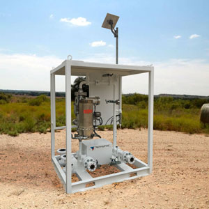
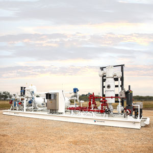

Featured Products
In addition to large scale implementations, UCOS has an ever-expanding line of stand-alone products. Some of these highly configurable products are built to stock while others are built to order. Contact UCOSsales@TechnipFMC.com .
Tank Monitoring System
The UCOS Tank Monitoring System is a fully configured plug-and-play solution, giving you field-level transmission and cloud access.
The basic system includes a low cost surface controller, pre-configured software, a low cost tablet with HMI, and in-cabinet LCD touch screen, industrial Ethernet switch, Div 2 Wi-Fi wireless access point, power supplies, antenna kits, and cables.

Multi Phase Meter Skid
Oil, sand, water, and oil levels change over time. Equipment needs to be adjusted to optimize production. The traditional approach of test, separation, and measurement followed by repeated adjustment and retesting is tedious and can lead to errors.
TechnipFMC offers a digital soloution. Our multi phase meter accurately and continuously measures well content while our UCOS controller analyzes data and makes production changes in real time, increasing recovery and revenue.

Early Production Skid
Designed for efficiency, the TechnipFMC Early Production Skid (EPS) is a turnkey system that includes a desander, choke manifold, and an advanced separator. Streams are measured with a high degree of accuracy as they leave the separator. Pressure, temperature, flow rate, and more are transmitted back to the cloud for easy data access. All EPS components are pre-configured and controlled by a UCOS logic engine.
The EPS gives you immediate production, accurate measurement, and reduced costs. Automation reduces manpower and improves accuracy. The one-time rig in simplifies setup, improves safety, simplifies logistics, and saves you money.